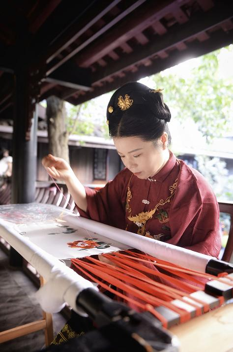
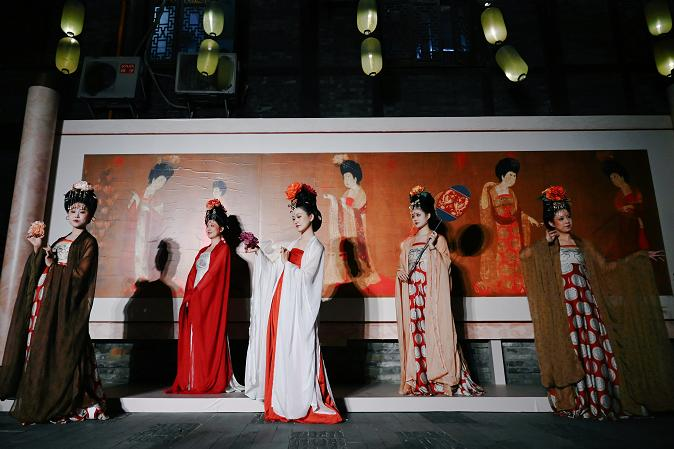
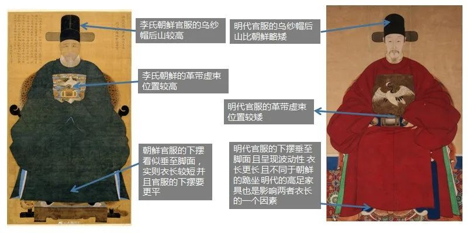
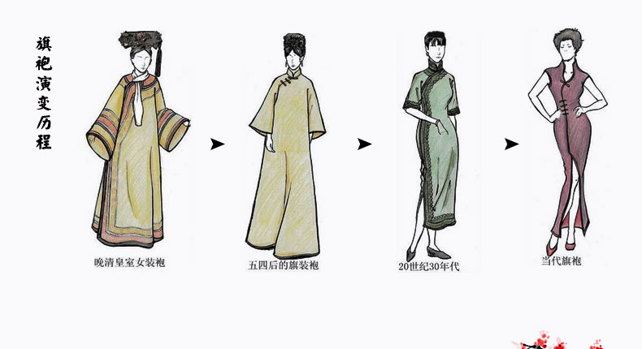

<!doctype html>
<html>
    <head>
        <meta charset="utf-8">
        <meta name="viewport" content="width=device-width, initial-scale=1.0, maximum-scale=1.0, user-scalable=no">

        <title>汉服复兴与民族自信</title>

        <link rel="stylesheet" href="https://cdn.bootcss.com/reveal.js/3.4.1/css/reveal.min.css">
        
        <!-- theme -->
        <script>
            var link = document.createElement( 'link' );
            link.rel = 'stylesheet';
            link.type = 'text/css';
            var theme ='black';
            switch (theme){
                case 'black':
                    link.href = 'https://cdn.bootcss.com/reveal.js/3.4.1/css/theme/black.min.css';
                    break;
                case 'beige':
                    link.href = 'https://cdn.bootcss.com/reveal.js/3.4.1/css/theme/beige.min.css';
                    break;
                case 'blood':
                    link.href = 'https://cdn.bootcss.com/reveal.js/3.4.1/css/theme/blood.min.css';
                    break;
                case 'league':
                    link.href = 'https://cdn.bootcss.com/reveal.js/3.4.1/css/theme/league.min.css';
                    break;
                case 'moon':
                    link.href = 'https://cdn.bootcss.com/reveal.js/3.4.1/css/theme/moon.min.css';
                    break;
                case 'night':
                    link.href = 'https://cdn.bootcss.com/reveal.js/3.4.1/css/theme/night.min.css';
                    break;
                case 'serif':
                    link.href = 'https://cdn.bootcss.com/reveal.js/3.4.1/css/theme/serif.min.css';
                    break;
                case 'sky':
                    link.href = 'https://cdn.bootcss.com/reveal.js/3.4.1/css/theme/sky.min.css';
                    break;
                case 'solarized':
                    link.href = 'https://cdn.bootcss.com/reveal.js/3.4.1/css/theme/solarized.min.css';
                    break;
                case 'white':
                    link.href = 'https://cdn.bootcss.com/reveal.js/3.4.1/css/theme/white.min.css';
                    break;
                default:
            }
            
            document.getElementsByTagName( 'head' )[0].appendChild( link );
        </script>
        <!-- Theme used for syntax highlighting of code -->
        <link rel="stylesheet" href="https://cdn.bootcss.com/reveal.js/3.4.1/lib/css/zenburn.min.css">
        <link href="https://cdn.bootcss.com/reveal.js/3.4.1/css/print/paper.min.css" rel="stylesheet">
        <!-- Printing and PDF exports -->
        
    </head>
    <body>
        <div class="reveal">
            <div class="slides">
                <section data-markdown
                         data-separator="^\n---\n"
                         data-separator-vertical="^\n--\n"
                         data-separator-notes="^Note:">
                    <script type="text/template">汉服复兴与民族自信


> 始作于 2020 年[汉服出行日][1]前夕之闪电演讲

[1]: https://www.google.com/search?q=%E6%B1%89%E6%9C%8D%E5%87%BA%E8%A1%8C%E6%97%A5

---

## 汉服复兴 —— 近年的现象级文化

---


---


---


---

### 成都 —— 汉服之都

---

2019 年：

- 汉服商家数量第一
- 汉服产品销量第一
- 汉服产业产值第一

---


---


---


---



---



---

#### 曾经的汉服“殇城”

---


---

<iframe
    style="width: 100%; height: 80vh"
    src="https://www.youtube.com/embed/J8IHCGLKFV8"
    allow="accelerometer; autoplay; clipboard-write; encrypted-media; gyroscope; picture-in-picture" allowfullscreen
></iframe>

（国际互联网视频，需科学上网）

---

##### 烧汉服事件始末

- [维基百科](https://zh.wikipedia.org/zh-hans/2010%E5%B9%B4%E6%88%90%E9%83%BD%E6%BC%A2%E6%9C%8D%E4%BA%8B%E4%BB%B6)
- [百度百科](https://baike.baidu.com/item/%E5%AD%99%E5%A9%B7/10423430)
- [西塘汉服节文选](http://www.sjhfj.com/show-11-248-1.html)

---

## 民族服装连连看

---

### 汉代曲裾 vs 日本和服


---

### 唐代齐胸 vs 朝鲜女装


---

### 明代官服 vs 朝鲜男装



---

### 汉服小姐姐英语回怼无脑黑（上）

<iframe
    style="width: 100%; height: 70vh"
    src="https://www.youtube.com/embed/Wd6Z2ZOzbOY"
    allow="accelerometer; autoplay; clipboard-write; encrypted-media; gyroscope; picture-in-picture" allowfullscreen
></iframe>

（国际互联网视频，需科学上网）

---

### 汉服小姐姐英语回怼无脑黑（中）

<iframe
    style="width: 100%; height: 70vh"
    src="https://www.youtube.com/embed/VdimXc9eX7o"
    allow="accelerometer; autoplay; clipboard-write; encrypted-media; gyroscope; picture-in-picture" allowfullscreen
></iframe>

（国际互联网视频，需科学上网）

---

### 汉服小姐姐英语回怼无脑黑（下）

<iframe
    style="width: 100%; height: 70vh"
    src="https://www.youtube.com/embed/9HvIjVFmPME"
    allow="accelerometer; autoplay; clipboard-write; encrypted-media; gyroscope; picture-in-picture" allowfullscreen
></iframe>

（国际互联网视频，需科学上网）

---

### 清代服装：旗袍、马褂



---


---

#### 剃发易服

> 留头不留发，留发不留头

---

### 汉服之定义

汉民族发展过程中**自然演变**出的传统服装

---

## 汉服复兴运动

---

### 正装·日常

---

<a target="_blank" href="https://baike.baidu.com/item/%E7%8E%8B%E4%B9%90%E5%A4%A9/6116738">
    
</a>

---

2003 年 11 月 22 日（明亡后 359 年）

汉服首次回归日常，并见诸报端

---

### 装束·复原

---

<iframe 
    style="width: 100%; height: 90vh"
    scrolling="no" border="0" frameborder="no" framespacing="0" allowfullscreen="true"
    src="//player.bilibili.com/player.html?isOutside=true&aid=82013542&bvid=BV13J4117752&cid=140706663&p=1"
></iframe>

---

### 自知·正名

---


Dior 抄袭马面裙

---


1981 年英国王妃戴安娜在订婚宴上穿了马面裙

---


[英文报道清晰说明了它是“Red silk satin Chinese embroidered skirt with chrysanthemum motif”（菊花图案红色丝缎中式绣裙）](https://princessdianabookboutique.wordpress.com/2015/02/23/its-goodbye-to-all-this-diana-on-the-verge-of-engagement-continues/)

---

### 铭记历史，轻装上阵

---

汉服，穿，就完了~

---

汉服，美，就完了~

---

### 博物馆奇妙日

---

<video
    style="width: 100%; height: 90vh"
    controls
    src="./YunXiangYiChang.mp4">
</video>

---


---


---


---


---

## 岂曰无衣，与子同袍

---

**汉服复兴**是一场完全由**华人青年**自发掀起的**社会运动**，

愉快、阳光又热血。

---

**青年人**在日常做一些**有趣**、**有意义**的小事，

就能营造自己生活的**小确幸**，

和民族、社会的**大复兴**~

---

[](https://open-source-bazaar.github.io/)

开源市集
</script>
                </section>
            </div>
        </div>

        <script src="https://cdn.bootcss.com/reveal.js/3.4.1/lib/js/head.min.js"></script>
        <script src="https://cdn.bootcss.com/reveal.js/3.4.1/js/reveal.min.js"></script>

        <script>
            // More info https://github.com/hakimel/reveal.js#configuration
            Reveal.initialize({
                history: true,
                // 是否在右下角展示控制条
                controls: true,
                // 是否显示演示的进度条
                progress: true,
                // 是否显示当前幻灯片的页数编号，也可以使用代码 “slideNumber: 'c/t'” ，表示当前页/总页数。
                slideNumber: false,
                // 是否将每个幻灯片改变加入到浏览器的历史记录中去
                history: false,
                // 是否启用键盘快捷键来导航
                keyboard: true,
                // 是否启用幻灯片的概览模式，可使用 "Esc" 或 "o" 键来切换概览模式
                overview: true,
                // 是否将幻灯片垂直居中
                center: true,
                // 是否在触屏设备上启用触摸滑动切换
                touch: true,
                // 是否循环演示
                loop: false,
                // 是否将演示的方向变成 RTL，即从右往左
                rtl: false,
                // 是否每次演示的时候，随机幻灯片的顺序
                shuffle: false,
                // 全局开启和关闭碎片。
                fragments: true,
                // 标识演示文稿是否在嵌入模式中运行，即包含在屏幕的有限部分中的
                embedded: false,
                // 标识当问号键被点击的时候是否应该显示一个帮助的覆盖层
                help: true,
                // 标识演讲者备注标志是否让所有观看者可见
                showNotes: false,
                // 两个幻灯片之间自动切换的时间间隔（毫秒）
                // 当设置成 0 的时候则禁止自动切换
                // 该值可以被幻灯片上的 “data-autoslide” 属性覆盖
                autoSlide: 0,
                // 当遇到用户输入的时候停止自动切换
                autoSlideStoppable: true,
                // 当自动滑动时，使用此方法进行导航。
                autoSlideMethod: Reveal.navigateNext,
                // 是否启用通过鼠标滚轮来导航幻灯片
                mouseWheel: false,
                // 是否在移动设备上隐藏地址栏
                hideAddressBar: true,
                // 是否在一个弹出的 iframe 中打开幻灯片中的链接
                previewLinks: false,
                // 切换过渡效果
                transition: 'none', // none/fade/slide/convex/concave/zoom
                // 过渡速度
                transitionSpeed: 'default', // default/fast/slow
                // 全屏幻灯片背景的过渡效果
                backgroundTransition: 'default', // none/fade/slide/convex/concave/zoom
                // 加载除当前可见的幻灯片之外的幻灯片数量
                viewDistance: 3,
                // 视差背景图片
                parallaxBackgroundImage: '',
                // e.g. 'https://s3.amazonaws.com/hakim-static/reveal-js/reveal-parallax-1.jpg'
                // 视差背景尺寸
                parallaxBackgroundSize: '', // CSS syntax, e.g. "2100px 900px"
                // 移动视差背景（水平和垂直）滑动变化的数量, 例如 100
                // - 除了指定自动计算
                // - 设置为 0 时，禁止沿轴运动
                parallaxBackgroundHorizontal: null,
                parallaxBackgroundVertical: null,
                // More info https://github.com/hakimel/reveal.js#dependencies
                dependencies: [
                    { src: 'https://cdn.bootcss.com/reveal.js/3.4.1/plugin/markdown/marked.js' },
                    { src: 'https://cdn.bootcss.com/reveal.js/3.4.1/plugin/markdown/markdown.min.js' },
                    { src: 'https://cdn.bootcss.com/reveal.js/3.4.1/plugin/notes/notes.min.js', async: true },
                    { src: 'https://cdn.bootcss.com/reveal.js/3.4.1/plugin/highlight/highlight.min.js', async: true, callback: function() { hljs.initHighlightingOnLoad(); } }
                ]
            });
        </script>
    </body>
</html>
